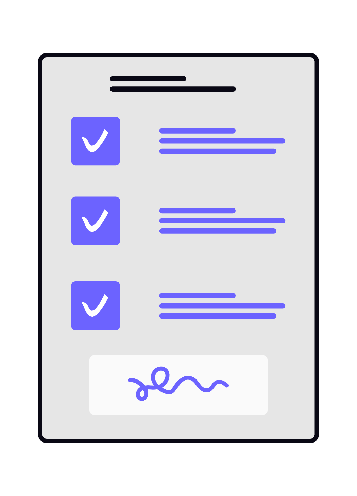
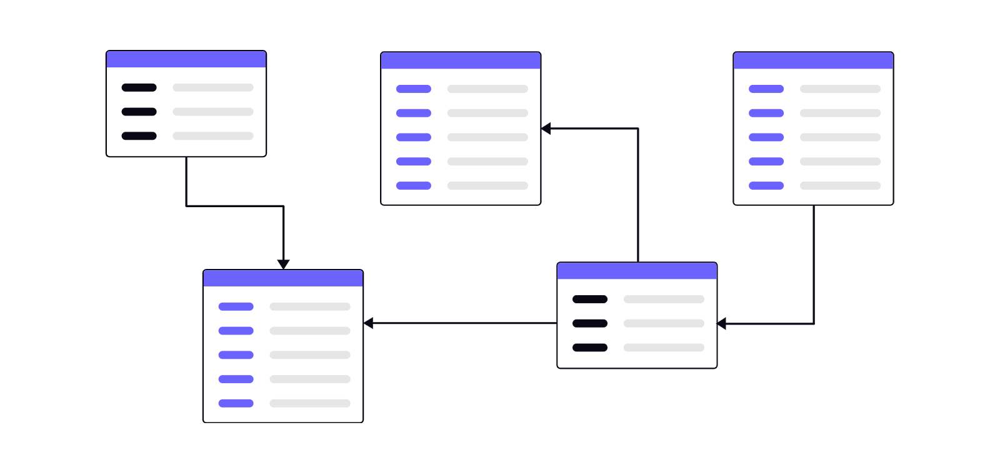
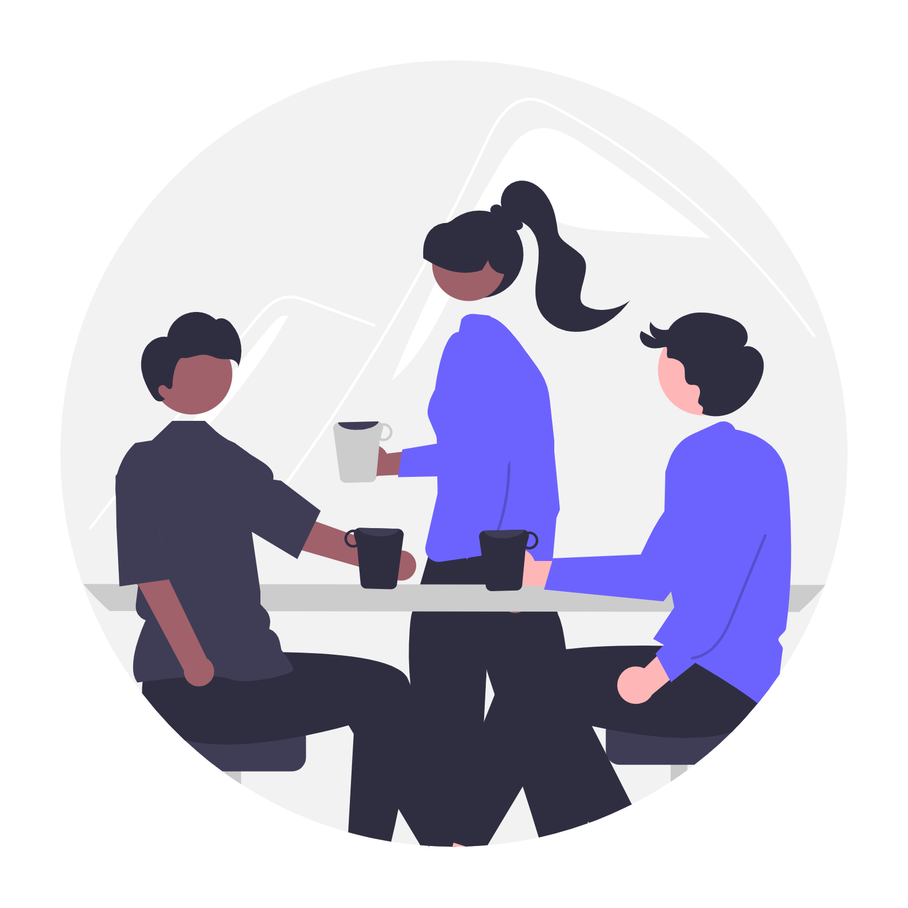

Operations Team
想いを動かすのは、人。
その人を支えるのは、仕組み。
学生と向き合い、挑戦を後押しする。
それはスタッフにしかできない仕事。
だからこそ、私たちは活動を支える仕組みを整える。
業務に追われる時間を減らし、学生と向き合う時間を増やす。
一人ひとりが本来の役割に集中できる環境をつくり、
プログラムの価値を高めていく。
OPSチームは、テクノロジーと仕組みの力で、
団体の可能性を広げる。
Why OPS?
なぜOPSチームが
なぜOPSチームが
必要なのか
全国で多くの学生とスタッフが活動している。
その一方で、活動を支える業務には
多くの時間と労力がかかっている。

学生情報の管理や各種事務作業
複数のツールや媒体に分散した情報共有

個人や支部ごとに異なるAI活用や業務フロー

こうした課題は、スタッフが本来注力すべき
「学生と向き合う時間」を奪ってしまう。
「学生と向き合う時間」を奪ってしまう。
目指すのは効率化そのものではない。
より多くの時間を学生との対話やプログラム設計に使い、
挑戦を支える環境を実現すること。
仕組みを整えることで、人にしかできない価値を最大化する。
Story
始まりは、Speak up！コンテスト
56期 Speak up！コンテスト 優勝者・久米悠雅の提案をきっかけに。
STEP 01
56期 全社会
業務効率化に関する提案を、Speak up！コンテストで発表。
→
STEP 02
提案後
学生代表・木家さんが有志メンバーを募集。
→
STEP 03
2026年4月
OPSチームとして、正式に始動。
一つの業務効率化提案が、全社を変えるプロジェクトへ。